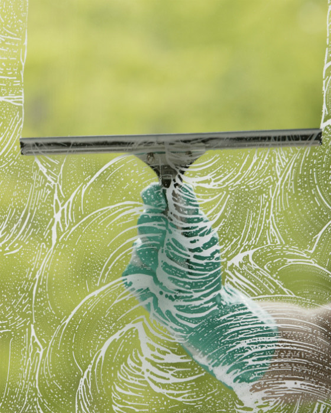

Residential Window Cleaning
Streak-free interior and exterior window cleaning for houses, townhomes, and apartments. We treat your home like it’s our own.
- Interior & exterior glass
- Mirrors & glass doors
- Screen & sill cleaning